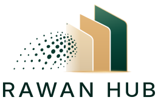
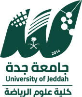
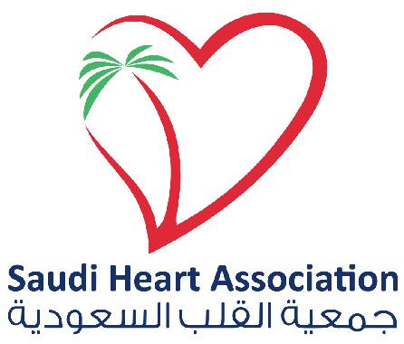
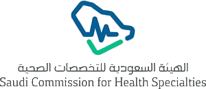
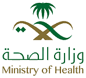
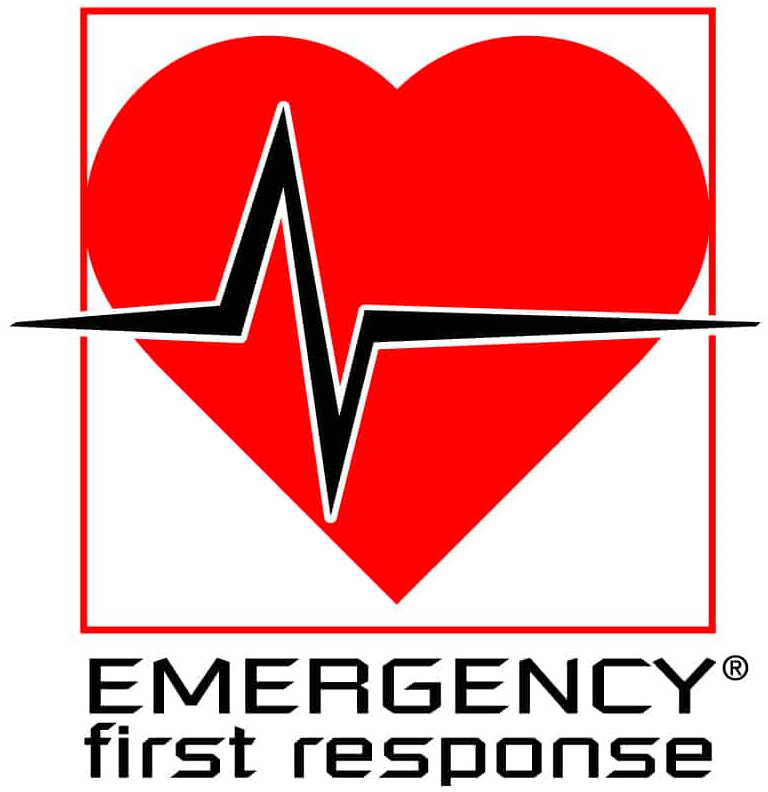

التدريب الصحي المعتمد
دعم الحياة والإسعافات الأولية ومكافحة العدوى، للكوادر الصحية والمجتمع، في مقر جهتكم أو في قاعاتنا.
BLSACLSPALSHSFABICSL
- لمن
- المنشآت الصحية، والمدارس، والشركات
- المخرجات
- متدربون بشهادات معتمدة صالحة لسنتين

Rawan Alsufyani
تطوير الأعمال والشراكات الصحية | إدارة البرامج التدريبية

فرص للتعلّم والتطوير، وآفاق أوسع للتعاون
ممارسة صحية ومدرّبة معتمدة، أجمع بين الخلفية العلمية في المجال الصحي والخبرة في إدارة الأعمال، لأبني برامج تدريبية وشراكات تصنع أثرًا حقيقيًا.
ما قدّمتهتطوير البرامج التدريبية، وتقديم دورات معتمدة في دعم الحياة والإسعافات الأولية ومكافحة العدوى.
الأثرتعزيز سمعة المركز وزيادة الإقبال على برامجه.
ما قدّمتهدورة «مبادئ الإسعافات الأولية» تطبيقية للطلاب والطالبات والمنسوبين.
الأثرتفاعل واسع من المشاركين، وتكريم من الجامعة.
ما قدّمتهفقرة تعريفية عن السكري، ونصائح الإسعافات الأولية لمريض السكري.
الأثرمشاركة في فعالية بحضور قيادات التجمع الصحي الأول بجدة.
شراكات، استشارات، أو برامج تدريبية لجهتكم.
دعم الحياة والإسعافات الأولية ومكافحة العدوى، للكوادر الصحية والمجتمع، في مقر جهتكم أو في قاعاتنا.
اتفاقيات مع المستشفيات والجامعات والشركات، وخطة تعاون واضحة.
من التخطيط والتسويق والتسجيل حتى التنفيذ والاعتماد وتقرير التقييم.
برامج تطوعية وتوعوية غير ربحية لنشر المعرفة وتعزيز الأثر المجتمعي، ومنها مبادرة «الثمان الأولى للإسعافات الأولية».
فهم احتياج الجهة وجمهورها، وتصميم فكرة برنامج واضح الأهداف وقابل للاعتماد.
إدارة البرنامج بكامل مراحله: التنسيق والتسويق والاستقطاب والتنفيذ وضمان الجودة.
بناء الاتفاقيات وقيادة العلاقة من أول اجتماع حتى الفعاليات المشتركة.
قياس النتائج بتقرير أثر واضح، وتطوير البرنامج للدورة التالية.
شهادات معتمدة، وتطبيق عملي، وتجربة تدريبية تليق بك.
الإنعاش القلبي الرئوي واستخدام جهاز الصدمات للممارسين الصحيين.
التعامل مع توقف القلب واضطرابات النظم وفق خوارزميات الإنعاش المتقدم.
إسعافات الطوارئ اليومية والإنعاش لغير الممارسين الصحيين.
الإنعاش القلبي الرئوي عالي الجودة، واستخدام جهاز الصدمات الكهربائية AED، وإزالة الاختناق للبالغين والأطفال والرضّع.
التعامل مع توقف القلب واضطرابات النظم والمتلازمات التاجية الحادة والسكتة الدماغية وفق خوارزميات الإنعاش المتقدم.
تقييم الرضّع والأطفال في الحالات الحرجة، والتعامل مع فشل التنفس والصدمة وتوقف القلب.
خطوات إنعاش المولود في الدقائق الأولى بعد الولادة والعمل ضمن فريق الإنعاش.
التعامل مع طوارئ الولادة ومضاعفات الحمل بخطوات منظمة.
التقييم الأولي ومعالجة مصابي الحوادث وفق منهجية منظمة وأولويات واضحة.
تقييم المصابين ورعايتهم في موقع الحادث وأثناء النقل حتى الوصول للمستشفى.
الإسعافات الأولية للطوارئ اليومية، والإنعاش القلبي الرئوي، واستخدام جهاز الصدمات لغير الممارسين الصحيين.
قراءة تخطيط القلب الكهربائي وتمييز الاضطرابات الشائعة.
استخدام الموجات فوق الصوتية بجانب السرير في تقييم الحالات الإسعافية.
المهارات الجراحية الأساسية مثل الخياطة والعُقد والتعامل الآمن مع الأدوات.
بدأت رحلتي في المختبر، ثم وجدت أن أكبر أثر أستطيع صنعه هو نقل المعرفة إلى غيري.
أعمل اليوم عند نقطة التقاء الصحة والتعليم والأعمال: أحوّل الأفكار التدريبية إلى برامج قائمة، والعلاقات المهنية إلى شراكات مستدامة.
بدأت مسيرتي التدريبية بتقديم دورات تحفيزية وورش عمل في تأسيس وإدارة المشاريع بالجامعة. واليوم، تشمل خبرتي تدريب الكوادر الصحية والمجتمع على مهارات إنقاذ الحياة، وتصميم البرامج التدريبية وإدارتها، إلى جانب بناء الاتفاقيات وقيادة الفرق التطوعية والفعاليات.
بناء الشراكات التدريبية مع الجهات الصحية والتعليمية، وقيادة البرامج من الاتفاقية حتى التنفيذ.
قيادة برامج القسم الصحي ونموه: العقود والتنسيق مع الشركاء والتسويق واستقطاب المتدربين.
تطوير برامج المركز وسمعته والإقبال عليه، وتقديم دورات معتمدة.
مدرّبة معتمدة في المجال الصحي محليًا ودوليًا




اكتب بياناتك، واختر الإرسال عبر واتساب أو البريد.
تدريب عملي بشرح واضح وتقنيات تفاعلية وتطبيق حقيقي على المجسمات، للممارسين الصحيين وعامة الناس.
اطبع رخصة دورتك على بطاقة بلاستيكية، واستلمها من المركز يومي الأحد والإثنين.
سؤالين وتعرف.
مدارس، شركات، مستشفيات، ومراكز صحية. أجي لكم في مقركم، وأرتب الموعد حسب عددكم.
من صفحة التسجيل: تختار المدينة والدورة والموعد، وتعبّي بياناتك، وتحوّل المبلغ وترفع الإيصال. يوصلك تأكيد الحجز بعد مراجعة الإيصال.
الدورات معتمدة من جهات مثل جمعية القلب السعودية، والشهادة تصدر عبر الجهة التدريبية الشريكة.
الحضوري: النظري والاختبار والعملي كلها في القاعة. الهايبرد: النظري والاختبار أونلاين، وتحضر للعملي فقط.
إيه، للمدارس والشركات والمنشآت الصحية. تواصل معي واتساب وأرتب معك العدد والموعد.
اضغط على القلب بإيقاع ثابت كأنك تسوي ضغطات صدر. الإيقاع الصحيح ١٠٠ إلى ١٢٠ ضغطة بالدقيقة.
ابدأ الضغط على القلب
للرضع والحوامل الطريقة تختلف، تتعلمها في الدورة.
لا تعطيه أكل ولا شرب.
الحروق الكبيرة أو بالوجه أو للأطفال: اطلب ٩٩٧.
اضغط على البطاقة لتشوف الجواب.
على حسابي في تيك توكخطوات توعوية مختصرة ولا تغني عن الدورة أو الاتصال بالإسعاف.
مدرّبة صحية معتمدة في دعم الحياة والإسعافات الأولية ومكافحة العدوى. درّبت أكثر من 4000 متدرب، وأحب أحوّل المعلومة الصحية لشي تتذكره وتطبّقه.
الدورات تُقدَّم بالشراكة مع جهات تدريبية معتمدة، والشهادة تصدر منها.